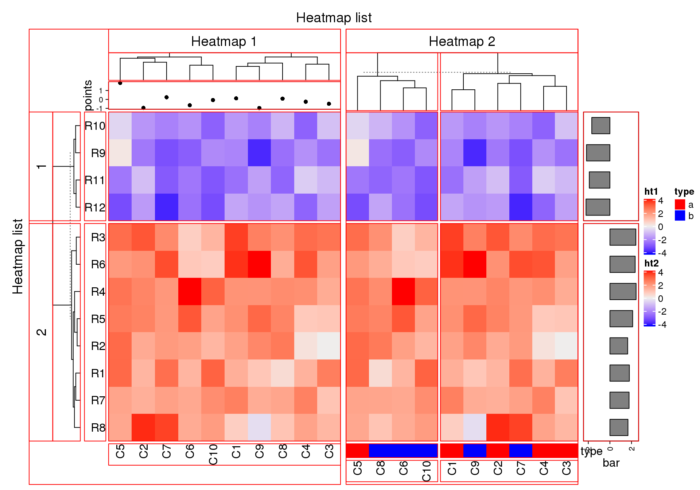
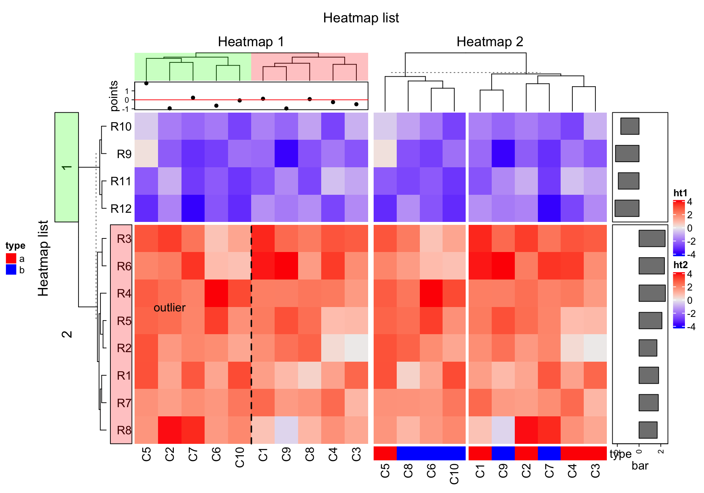
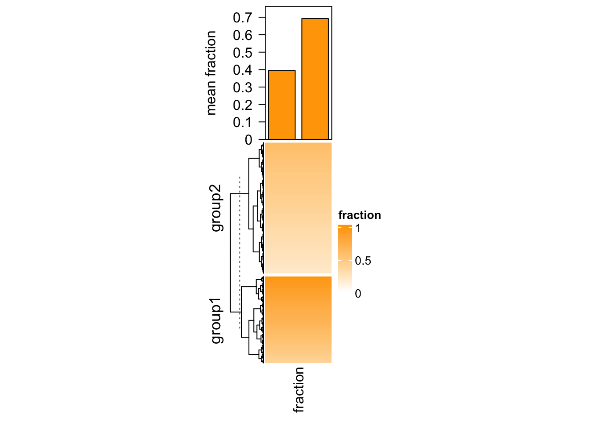
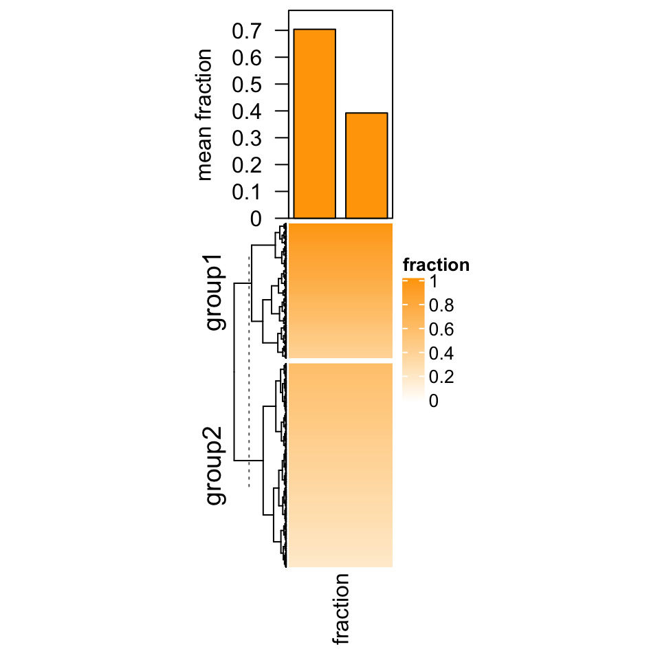

Chapter 6 Heatmap Decoration
The plotting region for each heatmap component is still kept after the
heatmaps are made, so it is possible to go back to the original places to add
more graphics there. First let’s generate a figure that almost contains all
types of heatmap components. list_components() lists the names of the
heatmap/annotation components (or the name of the viewport).
set.seed(123)
mat = matrix(rnorm(80, 2), 8, 10)
mat = rbind(mat, matrix(rnorm(40, -2), 4, 10))
rownames(mat) = paste0("R", 1:12)
colnames(mat) = paste0("C", 1:10)
ha_column1 = HeatmapAnnotation(points = anno_points(rnorm(10)),
annotation_name_side = "left")
ht1 = Heatmap(mat, name = "ht1", km = 2, column_title = "Heatmap 1",
top_annotation = ha_column1, row_names_side = "left")
ha_column2 = HeatmapAnnotation(type = c(rep("a", 5), rep("b", 5)),
col = list(type = c("a" = "red", "b" = "blue")))
ht2 = Heatmap(mat, name = "ht2", row_title = "Heatmap 2", column_title = "Heatmap 2",
bottom_annotation = ha_column2, column_km = 2)
ht_list = ht1 + ht2 +
rowAnnotation(bar = anno_barplot(rowMeans(mat), width = unit(2, "cm")))
draw(ht_list, row_title = "Heatmap list", column_title = "Heatmap list")
list_components()## [1] "ROOT" "global"
## [3] "global_layout" "global-heatmaplist"
## [5] "main_heatmap_list" "heatmap_ht1"
## [7] "ht1_heatmap_body_wrap" "ht1_heatmap_body_1_1"
## [9] "ht1_heatmap_body_2_1" "ht1_column_title_1"
## [11] "ht1_row_title_1" "ht1_row_title_2"
## [13] "ht1_dend_row_1" "ht1_dend_row_2"
## [15] "ht1_dend_column_1" "ht1_row_names_1"
## [17] "ht1_row_names_2" "ht1_column_names_1"
## [19] "annotation_points_1" "heatmap_ht2"
## [21] "ht2_heatmap_body_wrap" "ht2_heatmap_body_1_1"
## [23] "ht2_heatmap_body_1_2" "ht2_heatmap_body_2_1"
## [25] "ht2_heatmap_body_2_2" "ht2_column_title_1"
## [27] "ht2_dend_column_1" "ht2_dend_column_2"
## [29] "ht2_column_names_1" "ht2_column_names_2"
## [31] "annotation_type_1" "annotation_type_2"
## [33] "heatmap_heatmap_annotation_2" "annotation_bar_1"
## [35] "annotation_bar_2" "global-column_title_top"
## [37] "global_column_title" "global-row_title_left"
## [39] "global_row_title" "global-heatmap_legend_right"
## [41] "heatmap_legend" "global-annotation_legend_right"
## [43] "annotation_legend"
Basically the red regions in above plot can be revisited by decorate_*()
functions.
6.1 Decoration functions
Since you can get the viewport name by list_components(), actually you can
directly go to the viewport by seekViewport(). To get rid of the complicated
viewport names, the decorate_*() functions provide a more friendly way to do
it.
There are following decoration functions in ComplexHeatmap package:
decorate_heatmap_body()decorate_annotation()decorate_dend()decorate_title()decorate_dimnames()decorate_row_names(), identical todecorate_dimnames(..., which = "row").decorate_column_names(), identical todecorate_dimnames(..., which = "column").decorate_row_dend(), identical todecorate_dend(..., which = "row").decorate_column_dend(), identical todecorate_dend(..., which = "column").decorate_row_title(), identical todecorate_title(..., which = "row").decorate_column_title(), identical todecorate_title(..., which = "column").
Among them, decorate_heatmap_body() and decorate_annotation() are more often used.
For all these functions, they need a heatmap or annotation name, index for the row/column slices if the heatmap is split and a code block which defines how to add graphics. Check following example.
ht_list = draw(ht_list, row_title = "Heatmap list", column_title = "Heatmap list",
heatmap_legend_side = "right", annotation_legend_side = "left")
decorate_heatmap_body("ht1", {
grid.text("outlier", 1.5/10, 2.5/4, default.units = "npc")
grid.lines(c(0.5, 0.5), c(0, 1), gp = gpar(lty = 2, lwd = 2))
}, slice = 2)
decorate_column_dend("ht1", {
tree = column_dend(ht_list)$ht1[[1]]
ind = cutree(as.hclust(tree), k = 2)[order.dendrogram(tree)]
first_index = function(l) which(l)[1]
last_index = function(l) { x = which(l); x[length(x)] }
x1 = c(first_index(ind == 1), first_index(ind == 2)) - 1
x2 = c(last_index(ind == 1), last_index(ind == 2))
grid.rect(x = x1/length(ind), width = (x2 - x1)/length(ind), just = "left",
default.units = "npc", gp = gpar(fill = c("#FF000040", "#00FF0040"), col = NA))
})
decorate_row_names("ht1", {
grid.rect(gp = gpar(fill = "#FF000040"))
}, slice = 2)
decorate_row_title("ht1", {
grid.rect(gp = gpar(fill = "#00FF0040"))
}, slice = 1)
decorate_annotation("points", {
grid.lines(c(0, 1), unit(c(0, 0), "native"), gp = gpar(col = "red"))
})
For annotations which are created by anno_points(), anno_barplot() and
anno_boxplot(), “native” unit can be used in the decoration code.
6.2 Examples
6.2.1 Barplot for single-column heatmap
In Section 3.16, we introduced adding barplots as annotations for single-column heatmap. In that case the heatmap contains discrete values where the barplots show the frequency of each level. In following example, we show another scenario of using barplot as annotation but for a continuous heatmap.
Imagining we are analyzing a set of genomic regions (e.g. differentially methylated regions, DMRs) and we have a single-column heatmap which shows the overlap to e.g. genes (measured by the fraction of a DMR covered by genes, value between 0 and 1, e.g. a value of 0.5 means 50% of this DMR overlaps to the genes). If we denote the width of DMRs as \(w\) and the fraction as \(p\), on top of the fraction heatmap, we want to add barplots to show, on average, how much of the DMRs are covered by genes. In this case, we need to calcualte the mean fraction weighted by the width of DMRs (\(\sum{(w \cdot p)}/\sum{w}\)).
In following code, we randomly generated a fraction vector and split it into
two groups. We first use anno_empty() to allocate empty plotting region on
top of the heatmap and later we use decorate_annotation() to add the
barplots into it.
library(circlize)
# DMRs
bed = generateRandomBed(nr = 1000)
# fractions
frac = c(runif(400, min = 0.4, max = 1), runif(nrow(bed) - 400, min = 0.2, max = 0.6))
col_fun = colorRamp2(c(0, 1), c("white", "orange"))
# two groups
split = c(rep("group1", 400), rep("group2", nrow(bed) - 400))
# draw the fraction heatmap with an empty annotation
ht = Heatmap(frac, name = "fraction", col = col_fun, width = unit(2, "cm"),
top_annotation = HeatmapAnnotation(barplot = anno_empty(height = unit(4, "cm"))))
ht = draw(ht, row_split = split)
# get the row indices in the two row-groups
ro = row_order(ht)
w = bed[, 3] - bed[, 2]
# the mean weighted fraction in the two groups
p = sapply(ro, function(index) {
sum(w[index]*frac[index])/sum(w[index])
})
# add two bars of `p`
decorate_annotation("barplot", {
pushViewport(viewport(xscale = c(0.5, 2.5), yscale = c(0, max(p)*1.1)))
grid.rect(x = 1:2, y = 0, width = 0.8, height = p, just = "bottom",
gp = gpar(fill = "orange"), default.units = "native")
grid.yaxis()
grid.text("mean fraction", x = unit(-1.5, "cm"),rot = 90, just = "bottom")
popViewport()
})
6.2.2 Add titles for row annotations
Row annotations can be concatenated to the heatmap list. Sometimes we need a title for the row annotation. It is easy to implement it by decorations.
ht_list = Heatmap(matrix(rnorm(100), 10), name = "mat", show_column_dend = FALSE) +
rowAnnotation(foo = anno_barplot(1:10, width = unit(4, "cm"))) +
rowAnnotation(bar = anno_boxplot(matrix(rnorm(100), 10)), width = unit(4, "cm"))
draw(ht_list, padding = unit(c(2, 2, 10, 2), "mm")) # add space for titles
decorate_annotation("foo", {
grid.text("title for barplot", y = unit(1, "npc") + unit(2, "mm"), just = "bottom")
})
decorate_annotation("bar", {
grid.text("title for boxplot", y = unit(1, "npc") + unit(2, "mm"), just = "bottom")
})
decorate_heatmap_body("mat", {
grid.text("title for the heatmap", y = unit(1, "npc") + unit(2, "mm"), just = "bottom")
})
This is basically the way we use in Section 11.2.